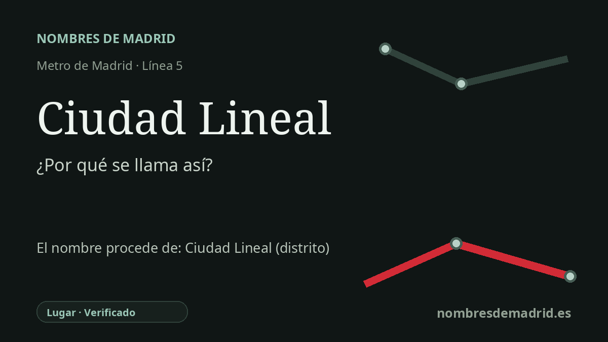

Publicado el · Investigación de Nombres de Madrid · Cómo verificamos cada origen · 8 fuentes consultadas
Respuesta rápida
Ciudad Lineal toma su nombre del área madrileña cuyo topónimo procede del pionero proyecto de ciudad lineal de Arturo Soria y Mata. La estación abrió en 1964 en el nudo de transportes de la calle de Alcalá con la calle de Arturo Soria, junto al eje conservado de aquel experimento urbano.
La historia del nombre
La estación de Metro toma su nombre de Ciudad Lineal, el topónimo madrileño del entorno oriental de la calle de Alcalá y la calle de Arturo Soria. En términos de transporte público, señala un área de intercambio consolidada, no un nombre creado para el Metro: la página actual del CRTM sitúa Ciudad Lineal en la línea 5 y enumera accesos en la calle de Alcalá, la calle de Arturo Soria y Hermanos García Noblejas.
Detrás del topónimo está la célebre idea urbanística de Arturo Soria y Mata. En 1892 Soria publicó su Proyecto de Ciudad Lineal alrededor de Madrid, en el que proponía una nueva ciudad organizada a lo largo de un corredor de transporte, en lugar de crecer mediante manzanas compactas alrededor de un centro. La historia del distrito publicada por el Ayuntamiento de Madrid identifica ese proyecto de 1892 como el origen del nombre.
El proyecto empezó a materializarse en la década de 1890. La Compañía Madrileña de Urbanización se constituyó en 1894, y la primera piedra de la Ciudad Lineal se colocó el 16 de julio de 1894 en terrenos entonces abiertos junto a los antiguos municipios del este y nordeste de Madrid. La ficha municipal de patrimonio describe el plan como una utopía higienista, antiespeculativa, ligada a la naturaleza y basada en el transporte público y la integración de distintas clases sociales.
La ambición de Soria era mucho mayor que lo finalmente construido. La oficina de turismo de Madrid describe una circunvalación lineal proyectada de unos 53 kilómetros, desde Fuencarral hacia Pozuelo de Alarcón, pero señala que entre 1892 y 1911 solo se urbanizó el primer tramo, entre Chamartín de la Rosa y la antigua carretera de Aragón. La actual calle de Arturo Soria, de unos seis kilómetros según esa fuente, conserva la memoria de aquel eje, aunque el tranvía original y muchos edificios primitivos hayan desaparecido.
Para la estación, el nombre ya estaba asentado cuando llegó el Metro. El tramo Ventas-Ciudad Lineal abrió el 28 de mayo de 1964 como una prolongación entonces vinculada a la línea 2, y más tarde se incorporó a la línea 5. La interpretación mejor respaldada es que la estación toma el nombre del topónimo Ciudad Lineal, derivado en última instancia del proyecto urbano de Arturo Soria, y no únicamente del actual distrito administrativo.